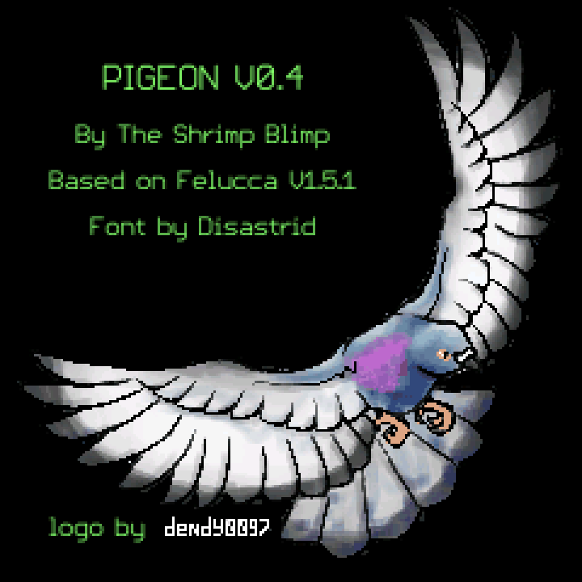
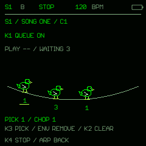
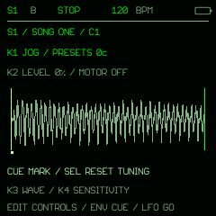
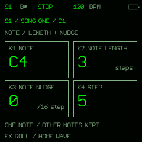
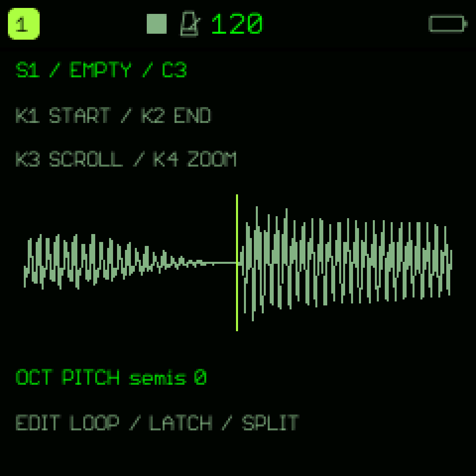
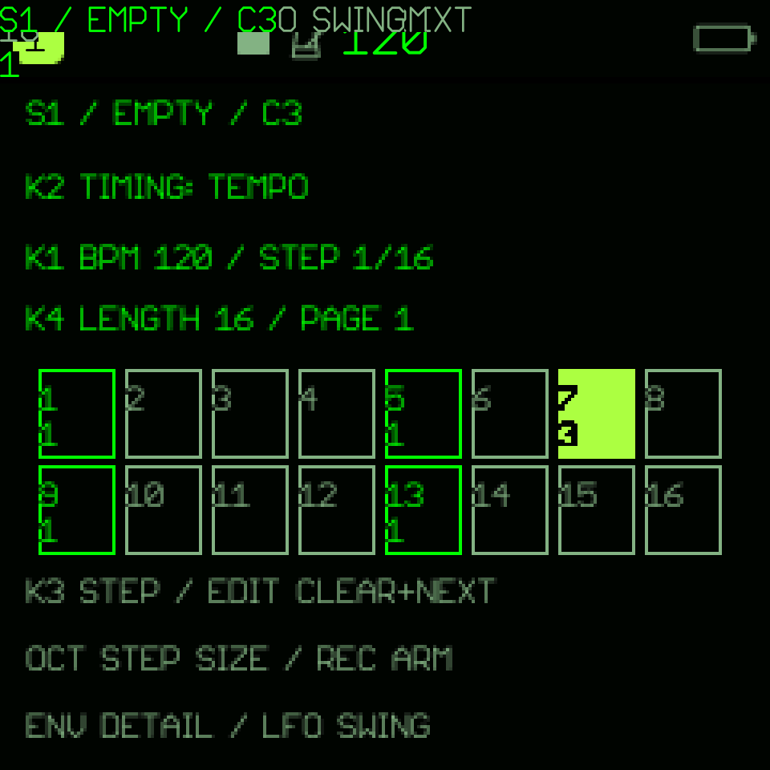
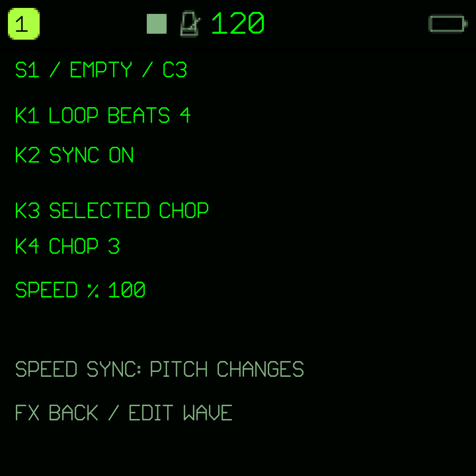

Find the part you want.
Automatic transient chops with editable boundaries, waveform zoom, pitch, envelopes, hold loops, and latch. Two independent chop layouts share the same audio.
Loading shared count · includes reinstalls
M-VAVE FM1 / PIGEON V0.4
Two song samples. A 16-pad drum kit. Chop, sequence, and play them with the hardware you already have.
Free and open source · GPL-3.0-only · macOS / Windows / Linux

WHAT IT DOES
Automatic transient chops with editable boundaries, waveform zoom, pitch, envelopes, hold loops, and latch. Two independent chop layouts share the same audio.
Step grid and piano roll with 1–64 steps per track, four notes per step, four patterns, and arrangement sections. Press SEQ again to switch views. Add swing, probability, repeats, pitch locks, and conditional hits.
Choke groups, held drum rolls, and loop tempo sync. Filter, delay, chorus, reverb, and distortion, with separate compression controls.
NEW IN V0.4
Queue chops, scratch records, and give each note its own timing.
EDIT → ARP opens queue mode. Add up to 64 waiting chops, including repeats. Select and remove individual entries while the current chop keeps playing.
EDIT → FX opens a waveform or record deck. Jog, cut the level, reverse, brake, return to a cue and tune by cents. Each song remembers its deck preferences.
From the piano roll, FX edits individual note length and nudge. Add conditional fills, Euclidean rhythms, DOUBLE/HALF and velocity/timing humanization.



Screen-reader support is included in standard v0.4 firmware and the emulator. Each track can use its own MIDI channel, with optional incoming-note track selection and MIDI screen wake.
Back up before updating. v0.4 projects use a newer parameter layout and cannot be opened by public v0.3.1.
INSTALL IN YOUR BROWSER
Use desktop Chrome or Edge and a USB data cable. Let the package verify, connect the FM1, then press Install to start the update. Visiting this page does not write to your instrument.
Before moving from another custom firmware to PIGEON, use TransitFM1 as the intermediate firmware instead of returning to V15. Follow TransitFM1’s compatibility checks, then return here to install PIGEON.
Thank you to Quixotic7 for creating and sharing TransitFM1, a stopover for switching FM1 firmware. Its current release is host-tested only. Follow its supported-source instructions; if it refuses your firmware, do not bypass that check. Some sources still require a documented return to stock first.
Back up first. Existing PIGEON users can save a complete recovery archive in the sample tool. Keep the device connected and powered throughout the update.
If your browser blocks MIDI inside this panel, open the installer directly ↗. The firmware is supplied automatically; downloading a package is optional.
UPDATE SAFEGUARDS
PIGEON includes installer safeguards and a recovery boot stub adapted from ChoralRoot FM-1 by Quixotic7 and the ChoralRoot contributors. Thank you for making this work open source.
The installer blocks Sloop, old Felucca betas, and unrecognized firmware before starting an update. Use TransitFM1 as the stopover before installing PIGEON, following its supported-source instructions.
With the recovery stub installed, an interrupted write can return to update mode on power-on. Reconnect the FM1 and run the installer again. Hold OCT- alone while switching on to request recovery mode.
The first installation of the stub, or a later change to it, has a short unprotected window. Fully charge the FM1, use a direct USB data cable without a hub, keep your computer awake, and leave it connected until the update finishes.
PIGEON v0.4 installation and reboot have been verified on physical M-VAVE FM1 hardware, with samples and sessions preserved. Interrupted-update recovery has passed host simulations; physical interruption testing remains a separate, unverified check. See the release notes for validation limits. Returning to stock or installing older firmware removes this protection.
ON THE INSTRUMENT
Captured from the firmware’s own renderer with test-fixture audio. Little Character text is rerendered from its original font outlines for sharper web presentation; the physical screen is 240×240.



GET STARTED
You need an FM1, a USB data cable, and desktop Chrome or Edge for USB MIDI. The sample editor runs locally in your browser.
If you already run PIGEON, open the sample tool, connect the FM1, and save a complete recovery archive. Keep a copy on your computer before changing firmware.
Open backup and sample tool ↗If you are coming from another custom firmware, install TransitFM1 first, following its compatibility checks, then install PIGEON. Existing PIGEON users can select it in the sample tool’s firmware panel; the tool saves a recovery archive before writing. For stock firmware or another compatible FM1 firmware, use the dedicated installer. Keep USB connected and the instrument powered until it restarts.
v0.4 installation and reboot have been verified on physical M-VAVE FM1 hardware, with samples and sessions preserved. v0.4 adds FIFO chop queues, scratch decks and individual note timing. Back up a complete session first: v0.3.1 cannot read v0.4 projects. The recovery boot stub can resume an interrupted update; its first installation has a short unprotected window. Physical interrupted-update recovery testing remains separate from normal hardware testing. Review the installer’s recovery information before continuing.
Open the sample tool, import Song 1 and Song 2, and add up to 16 one-shots. Append multiple files to either song, trim, preview and rearrange them, then Apply. Whole sections occupy the first keys; automatic slices fill the remaining slots, up to 32 chops per song. Send the combined bank to the FM1. Uploading replaces both songs and the kit together.
Open sample editor ↗Disconnect USB when the transfer finishes. Play the keys to trigger chops, then use K1 and K2 on the waveform page to adjust their start and end. Hold SEL on the waveform and trigger a chop to audition its ending, then loop from the beginning while held. Your samples remain in flash.
Read the quick controls ↓Press SEQ for the step grid; press it again for the piano roll. Both edit the same sequence, with 1–64 steps and up to four notes per step. K3 selects a step and K4 sets the length while stopped. PRESETS scrolls the piano-roll rows.
While stopped and unarmed, tap keys to add or remove notes on the selected step. For step recording, press REC, hold a chord, then release every key to advance once. During playback, REC records live. HOME returns to the waveform.
Keep an exported bank and a complete session archive so you can restore your samples and patterns.
Sequencer controls and saving ↗QUICK REFERENCE
| Control | On the waveform page |
|---|---|
| K1 | Selected chop start |
| K2 | Selected chop end |
| K3 | Scroll the waveform |
| K4 | Horizontal zoom |
| OCT − / + | Chop pitch |
| White and black keys | Trigger chops; extra chops use the alternate key bank |
Page buttons open immediately on press. HOME returns to the waveform; press HOME on the waveform to open Settings, then HOME to return. Hold SEL on the waveform and trigger a chop to audition its ending and loop from the beginning while held, without recording or changing its boundaries.
Press SEQ again to switch between grid and piano roll. Both support four notes per step. While stopped and unarmed, keys toggle notes on the selected step. With REC armed, hold a chord and release all keys to advance. PRESETS scrolls piano-roll rows. On SEQ: K1 tempo, K2 tempo/sample-end timing, K3 step, K4 length (1–64). OCT selects step duration. REC arms recording; the screen shows stopped, armed, recording, or playing. Pattern changes wait for the configured next-bar or pattern-end boundary.
KNOW YOUR SPACE
Both songs and all drum pads share 496 KiB. Songs use indexed mono MP3; drum one-shots use ADPCM. Longer songs leave less room for the kit.
Illustrative allocation. With no Song 2 or drums, about 155 seconds fits at 24 kbps, or about 60 seconds at 64 kbps. The tool shows the actual space used before upload.
Song 1 and Song 2 share eight playback voices, with four additional voices reserved for drums. Direct recording and resampling are not included. Scratch decks support forward and reverse playback.
DOWNLOADS
v0.4 · October 17, 2026
610,995 bytes · Includes the USB update loader.
SHA-256: 100b4f0e02a345af91e758423f0a12e3241a8d3422ff8cc0b3f85b5eb93066cdNo copyrighted song samples are distributed with this site. Import your own audio using the sample tool.
FOUNDATION AND THANKS
PIGEON is built on Felucca by Leo Kuroshita (@kurogedelic), Hügelton Instruments, and its contributors. Thank you for sharing the FM1 platform, hardware drivers, audio and sample engines, project storage, display framework, USB MIDI tools, and firmware update infrastructure that PIGEON builds on.
Thank you also to ChoralRoot FM-1 by Quixotic7 and its contributors for the update safeguards and recovery design adapted for PIGEON.
Thank you to the open-source firmware developer community: the developers, reverse engineers, maintainers, testers, and documentation contributors who share code and knowledge so projects like PIGEON can exist.
BEFORE YOU START
No. Importing, encoding, previewing, and editing run on your computer in the browser. USB MIDI sends the bank directly to your FM1. Wait for “Offline ready” in the tool before disconnecting the internet; its cached features remain available while browser storage is retained.
Use M-VAVE’s official update procedure with an unmodified official firmware package to return to stock. Returning to stock removes PIGEON’s recovery boot stub. Back up first: the stock firmware cannot open PIGEON projects. A loader-mode recovery needs its own recovery procedure.
Official M-VAVE downloads ↗Yes. PIGEON is free and open-source software licensed under GPL-3.0-only. You can read the code, build it, modify it, and share it under the licence terms. Bug reports and contributions are welcome on GitHub. Each firmware download includes its matching source archive and licensing information.
PIGEON is an independent sampler project built on Felucca. Existing project containers remain supported, but inherited synth tracks do not sound in the sampler profile. New conditional-step data requires current PIGEON firmware.